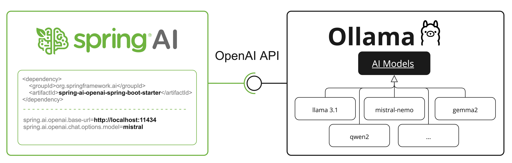
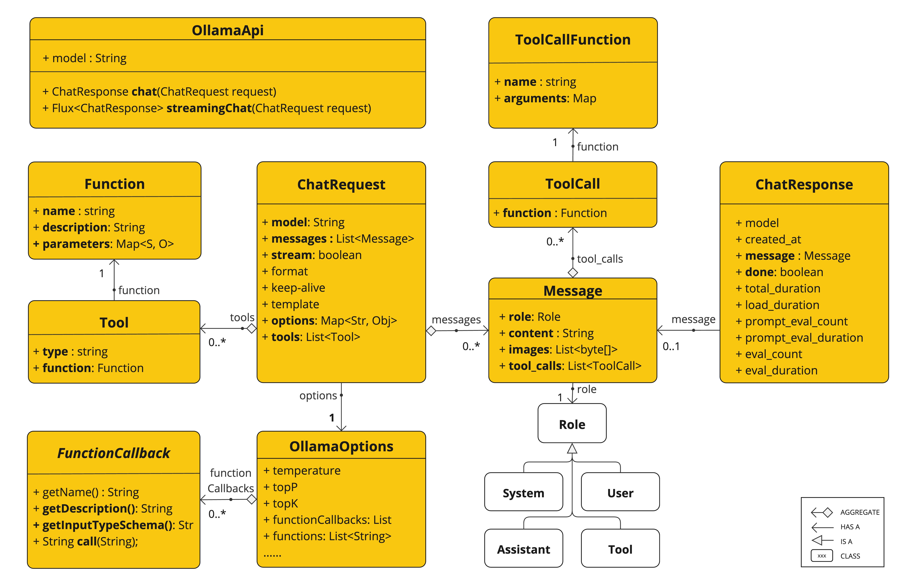

Ollama Chat
With Ollama you can run various Large Language Models (LLMs) locally and generate text from them.
Spring AI supports the Ollama chat completion capabilities with the OllamaChatModel API.
| Ollama offers an OpenAI API compatible endpoint as well. The OpenAI API compatibility section explains how to use the Spring AI OpenAI to connect to an Ollama server. |
Prerequisites
You first need access to an Ollama instance. There are a few options, including the following:
-
Download and install Ollama on your local machine.
-
Configure and run Ollama via Testcontainers.
You can pull the models you want to use in your application from the Ollama model library:
ollama pull <model-name>You can also pull any of the thousands, free, GGUF Hugging Face Models:
ollama pull hf.co/<username>/<model-repository>Alternatively, you can enable the option to download automatically any needed model: Auto-pulling Models.
Auto-configuration
|
There has been a significant change in the Spring AI auto-configuration, starter modules' artifact names. Please refer to the upgrade notes for more information. |
Spring AI provides Spring Boot auto-configuration for the Ollama chat integration.
To enable it add the following dependency to your project’s Maven pom.xml or Gradle build.gradle build files:
-
Maven
-
Gradle
<dependency>
<groupId>org.springframework.ai</groupId>
<artifactId>spring-ai-starter-model-ollama</artifactId>
</dependency>dependencies {
implementation 'org.springframework.ai:spring-ai-starter-model-ollama'
}| Refer to the Dependency Management section to add the Spring AI BOM to your build file. |
Base Properties
The prefix spring.ai.ollama is the property prefix to configure the connection to Ollama.
Property |
Description |
Default |
spring.ai.ollama.base-url |
Base URL where Ollama API server is running. |
|
Here are the properties for initializing the Ollama integration and auto-pulling models.
Property |
Description |
Default |
spring.ai.ollama.init.pull-model-strategy |
Whether to pull models at startup-time and how. |
|
spring.ai.ollama.init.timeout |
How long to wait for a model to be pulled. |
|
spring.ai.ollama.init.max-retries |
Maximum number of retries for the model pull operation. |
|
spring.ai.ollama.init.chat.include |
Include this type of models in the initialization task. |
|
spring.ai.ollama.init.chat.additional-models |
Additional models to initialize besides the ones configured via default properties. |
|
Chat Properties
|
Enabling and disabling of the chat auto-configurations are now configured via top level properties with the prefix To enable, spring.ai.model.chat=ollama (It is enabled by default) To disable, spring.ai.model.chat=none (or any value which doesn’t match ollama) This change is done to allow configuration of multiple models. |
The prefix spring.ai.ollama.chat is the property prefix that configures the Ollama chat model.
It includes the Ollama request (advanced) parameters such as the model, keep-alive, and format as well as the Ollama model options properties.
Here are the advanced request parameter for the Ollama chat model:
Property |
Description |
Default |
spring.ai.ollama.chat.enabled (Removed and no longer valid) |
Enable Ollama chat model. |
true |
spring.ai.model.chat |
Enable Ollama chat model. |
ollama |
spring.ai.ollama.chat.model |
The name of the supported model to use. |
mistral |
spring.ai.ollama.chat.format |
The format to return a response in. Accepts either |
- |
spring.ai.ollama.chat.keep_alive |
Controls how long the model will stay loaded into memory following the request |
5m |
spring.ai.ollama.chat.think |
Controls whether models emit their reasoning trace before the final answer. |
- |
The remaining options properties are based on the Ollama Valid Parameters and Values and Ollama Types. The default values are based on the Ollama Types Defaults.
Property |
Description |
Default |
spring.ai.ollama.chat.numa |
Whether to use NUMA. |
false |
spring.ai.ollama.chat.num-ctx |
Sets the size of the context window used to generate the next token. |
2048 |
spring.ai.ollama.chat.num-batch |
Prompt processing maximum batch size. |
512 |
spring.ai.ollama.chat.num-gpu |
The number of layers to send to the GPU(s). On macOS it defaults to 1 to enable metal support, 0 to disable. 1 here indicates that NumGPU should be set dynamically |
-1 |
spring.ai.ollama.chat.main-gpu |
When using multiple GPUs this option controls which GPU is used for small tensors for which the overhead of splitting the computation across all GPUs is not worthwhile. The GPU in question will use slightly more VRAM to store a scratch buffer for temporary results. |
0 |
spring.ai.ollama.chat.low-vram |
- |
false |
spring.ai.ollama.chat.f16-kv |
- |
true |
spring.ai.ollama.chat.logits-all |
Return logits for all the tokens, not just the last one. To enable completions to return logprobs, this must be true. |
- |
spring.ai.ollama.chat.vocab-only |
Load only the vocabulary, not the weights. |
- |
spring.ai.ollama.chat.use-mmap |
By default, models are mapped into memory, which allows the system to load only the necessary parts of the model as needed. However, if the model is larger than your total amount of RAM or if your system is low on available memory, using mmap might increase the risk of pageouts, negatively impacting performance. Disabling mmap results in slower load times but may reduce pageouts if you’re not using mlock. Note that if the model is larger than the total amount of RAM, turning off mmap would prevent the model from loading at all. |
null |
spring.ai.ollama.chat.use-mlock |
Lock the model in memory, preventing it from being swapped out when memory-mapped. This can improve performance but trades away some of the advantages of memory-mapping by requiring more RAM to run and potentially slowing down load times as the model loads into RAM. |
false |
spring.ai.ollama.chat.num-thread |
Sets the number of threads to use during computation. By default, Ollama will detect this for optimal performance. It is recommended to set this value to the number of physical CPU cores your system has (as opposed to the logical number of cores). 0 = let the runtime decide |
0 |
spring.ai.ollama.chat.num-keep |
- |
4 |
spring.ai.ollama.chat.seed |
Sets the random number seed to use for generation. Setting this to a specific number will make the model generate the same text for the same prompt. |
-1 |
spring.ai.ollama.chat.num-predict |
Maximum number of tokens to predict when generating text. (-1 = infinite generation, -2 = fill context) |
-1 |
spring.ai.ollama.chat.top-k |
Reduces the probability of generating nonsense. A higher value (e.g., 100) will give more diverse answers, while a lower value (e.g., 10) will be more conservative. |
40 |
spring.ai.ollama.chat.top-p |
Works together with top-k. A higher value (e.g., 0.95) will lead to more diverse text, while a lower value (e.g., 0.5) will generate more focused and conservative text. |
0.9 |
spring.ai.ollama.chat.min-p |
Alternative to the top_p, and aims to ensure a balance of quality and variety. The parameter p represents the minimum probability for a token to be considered, relative to the probability of the most likely token. For example, with p=0.05 and the most likely token having a probability of 0.9, logits with a value less than 0.045 are filtered out. |
0.0 |
spring.ai.ollama.chat.tfs-z |
Tail-free sampling is used to reduce the impact of less probable tokens from the output. A higher value (e.g., 2.0) will reduce the impact more, while a value of 1.0 disables this setting. |
1.0 |
spring.ai.ollama.chat.typical-p |
- |
1.0 |
spring.ai.ollama.chat.repeat-last-n |
Sets how far back for the model to look back to prevent repetition. (Default: 64, 0 = disabled, -1 = num_ctx) |
64 |
spring.ai.ollama.chat.temperature |
The temperature of the model. Increasing the temperature will make the model answer more creatively. |
0.8 |
spring.ai.ollama.chat.repeat-penalty |
Sets how strongly to penalize repetitions. A higher value (e.g., 1.5) will penalize repetitions more strongly, while a lower value (e.g., 0.9) will be more lenient. |
1.1 |
spring.ai.ollama.chat.presence-penalty |
- |
0.0 |
spring.ai.ollama.chat.frequency-penalty |
- |
0.0 |
spring.ai.ollama.chat.mirostat |
Enable Mirostat sampling for controlling perplexity. (default: 0, 0 = disabled, 1 = Mirostat, 2 = Mirostat 2.0) |
0 |
spring.ai.ollama.chat.mirostat-tau |
Controls the balance between coherence and diversity of the output. A lower value will result in more focused and coherent text. |
5.0 |
spring.ai.ollama.chat.mirostat-eta |
Influences how quickly the algorithm responds to feedback from the generated text. A lower learning rate will result in slower adjustments, while a higher learning rate will make the algorithm more responsive. |
0.1 |
spring.ai.ollama.chat.penalize-newline |
- |
true |
spring.ai.ollama.chat.stop |
Sets the stop sequences to use. When this pattern is encountered the LLM will stop generating text and return. Multiple stop patterns may be set by specifying multiple separate stop parameters in a modelfile. |
- |
spring.ai.ollama.chat.tool-callbacks |
Tool Callbacks to register with the ChatModel. |
- |
All properties prefixed with spring.ai.ollama.chat can be overridden at runtime by adding request-specific Runtime Options to the Prompt call.
|
Runtime Options
The OllamaChatOptions.java class provides model configurations, such as the model to use, the temperature, thinking mode, etc.
The OllamaOptions class has been deprecated. Use OllamaChatOptions for chat models and OllamaEmbeddingOptions for embedding models instead. The new classes provide type-safe, model-specific configuration options.
|
On start-up, the default options can be configured with the OllamaChatModel(api, options) constructor or the spring.ai.ollama.chat.* properties.
At run-time, you can override the default options by adding new, request-specific options to the Prompt call.
For example, to override the default model and temperature for a specific request:
ChatResponse response = chatModel.call(
new Prompt(
"Generate the names of 5 famous pirates.",
OllamaChatOptions.builder()
.model(OllamaModel.LLAMA3_1)
.temperature(0.4)
.build()
));| In addition to the model specific OllamaChatOptions you can use a portable ChatOptions instance, created with ChatOptions#builder(). |
Auto-pulling Models
Spring AI Ollama can automatically pull models when they are not available in your Ollama instance. This feature is particularly useful for development and testing as well as for deploying your applications to new environments.
| You can also pull, by name, any of the thousands, free, GGUF Hugging Face Models. |
There are three strategies for pulling models:
-
always(defined inPullModelStrategy.ALWAYS): Always pull the model, even if it’s already available. Useful to ensure you’re using the latest version of the model. -
when_missing(defined inPullModelStrategy.WHEN_MISSING): Only pull the model if it’s not already available. This may result in using an older version of the model. -
never(defined inPullModelStrategy.NEVER): Never pull the model automatically.
| Due to potential delays while downloading models, automatic pulling is not recommended for production environments. Instead, consider assessing and pre-downloading the necessary models in advance. |
All models defined via configuration properties and default options can be automatically pulled at startup time. You can configure the pull strategy, timeout, and maximum number of retries using configuration properties:
spring:
ai:
ollama:
init:
pull-model-strategy: always
timeout: 60s
max-retries: 1| The application will not complete its initialization until all specified models are available in Ollama. Depending on the model size and internet connection speed, this may significantly slow down your application’s startup time. |
You can initialize additional models at startup, which is useful for models used dynamically at runtime:
spring:
ai:
ollama:
init:
pull-model-strategy: always
chat:
additional-models:
- llama3.2
- qwen2.5If you want to apply the pulling strategy only to specific types of models, you can exclude chat models from the initialization task:
spring:
ai:
ollama:
init:
pull-model-strategy: always
chat:
include: falseThis configuration will apply the pulling strategy to all models except chat models.
Function Calling
You can register custom Java functions with the OllamaChatModel and have the Ollama model intelligently choose to output a JSON object containing arguments to call one or many of the registered functions.
This is a powerful technique to connect the LLM capabilities with external tools and APIs.
Read more about Tool Calling.
| You need Ollama 0.2.8 or newer to use the functional calling capabilities and Ollama 0.4.6 or newer to use them in streaming mode. |
OllamaChatModel does not execute tool calls internally.
Tool execution must be handled externally using one of two supported approaches:
-
ChatClient with ToolCallingAdvisor — the recommended approach for most use cases.
ToolCallingAdvisormanages the tool-call loop transparently. -
User-controlled tool execution — use
ToolCallingManagerdirectly when you need full control over the loop.
Tool Calling via ChatClient (Recommended)
Use ChatClient with ToolCallingAdvisor for both synchronous and streaming tool execution.
ToolCallback weatherCallback = FunctionToolCallback.builder("getCurrentWeather", new WeatherService())
.description("Get the weather in location")
.inputType(WeatherService.Request.class)
.build();
// Synchronous
String response = ChatClient.create(chatModel)
.prompt()
.user("What's the weather in Paris, Tokyo, and New York?")
.tools(weatherCallback)
.call()
.content();
// Streaming
Flux<String> stream = ChatClient.create(chatModel)
.prompt()
.user("What's the weather in Paris, Tokyo, and New York?")
.tools(weatherCallback)
.stream()
.content();User-Controlled Tool Execution
Use this pattern when you need direct access to the ChatModel API and want full control over the tool-call loop.
Invoke ChatModel directly without ToolCallingAdvisor; check for tool calls yourself and drive the loop using ToolCallingManager.
ToolCallingManager toolCallingManager = ToolCallingManager.builder().build();
OllamaChatOptions options = OllamaChatOptions.builder()
.toolCallbacks(ToolCallbacks.from(new WeatherService()))
.build();
Prompt prompt = new Prompt("What's the weather in Paris, Tokyo, and New York?", options);
ChatResponse response = chatModel.call(prompt);
while (response.hasToolCalls()) {
ToolExecutionResult result = toolCallingManager.executeToolCalls(prompt, response);
prompt = new Prompt(result.conversationHistory(), options);
response = chatModel.call(prompt);
}For streaming, use flatMap to detect tool calls and re-stream with the updated conversation history:
ToolCallingManager toolCallingManager = ToolCallingManager.builder().build();
Prompt prompt = new Prompt("What's the weather in Paris, Tokyo, and New York?", options);
String content = chatModel.stream(prompt).flatMap(response -> {
if (response.hasToolCalls()) {
ToolExecutionResult result = toolCallingManager.executeToolCalls(prompt, response);
return chatModel.stream(new Prompt(result.conversationHistory(), options));
}
return Flux.just(response);
})
.mapNotNull(r -> r.getResult() != null ? r.getResult().getOutput().getText() : null)
.collect(Collectors.joining())
.block();Thinking Mode (Reasoning)
Ollama supports thinking mode for reasoning models that can emit their internal reasoning process before providing a final answer. This feature is available for models like Qwen3, DeepSeek-v3.1, DeepSeek R1, and GPT-OSS.
| Thinking mode helps you understand the model’s reasoning process and can improve response quality for complex problems. |
Default Behavior (Ollama 0.12+): Thinking-capable models (such as qwen3:*-thinking, deepseek-r1, deepseek-v3.1) auto-enable thinking by default when the think option is not explicitly set. Standard models (such as qwen2.5:*, llama3.2) do not enable thinking by default. To explicitly control this behavior, use .enableThinking() or .disableThinking().
|
Enabling Thinking Mode
Most models (Qwen3, DeepSeek-v3.1, DeepSeek R1) support simple boolean enable/disable:
ChatResponse response = chatModel.call(
new Prompt(
"How many letter 'r' are in the word 'strawberry'?",
OllamaChatOptions.builder()
.model("qwen3")
.enableThinking()
.build()
));
// Access the thinking process
String thinking = response.getResult().getMetadata().get("thinking");
String answer = response.getResult().getOutput().getText();You can also disable thinking explicitly:
ChatResponse response = chatModel.call(
new Prompt(
"What is 2+2?",
OllamaChatOptions.builder()
.model("deepseek-r1")
.disableThinking()
.build()
));Thinking Levels (GPT-OSS Only)
The GPT-OSS model requires explicit thinking levels instead of boolean values:
// Low thinking level
ChatResponse response = chatModel.call(
new Prompt(
"Generate a short headline",
OllamaChatOptions.builder()
.model("gpt-oss")
.thinkLow()
.build()
));
// Medium thinking level
ChatResponse response = chatModel.call(
new Prompt(
"Analyze this dataset",
OllamaChatOptions.builder()
.model("gpt-oss")
.thinkMedium()
.build()
));
// High thinking level
ChatResponse response = chatModel.call(
new Prompt(
"Solve this complex problem",
OllamaChatOptions.builder()
.model("gpt-oss")
.thinkHigh()
.build()
));Accessing Thinking Content
The thinking content is available in the response metadata:
ChatResponse response = chatModel.call(
new Prompt(
"Calculate 17 × 23",
OllamaChatOptions.builder()
.model("deepseek-r1")
.enableThinking()
.build()
));
// Get the reasoning process
String thinking = response.getResult().getMetadata().get("thinking");
System.out.println("Reasoning: " + thinking);
// Output: "17 × 20 = 340, 17 × 3 = 51, 340 + 51 = 391"
// Get the final answer
String answer = response.getResult().getOutput().getText();
System.out.println("Answer: " + answer);
// Output: "The answer is 391"Streaming with Thinking
Thinking mode works with streaming responses as well:
Flux<ChatResponse> stream = chatModel.stream(
new Prompt(
"Explain quantum entanglement",
OllamaChatOptions.builder()
.model("qwen3")
.enableThinking()
.build()
));
stream.subscribe(response -> {
String thinking = response.getResult().getMetadata().get("thinking");
String content = response.getResult().getOutput().getText();
if (thinking != null && !thinking.isEmpty()) {
System.out.println("[Thinking] " + thinking);
}
if (content != null && !content.isEmpty()) {
System.out.println("[Response] " + content);
}
});
When thinking is disabled or not set, the thinking metadata field will be null or empty.
|
Multimodal
Multimodality refers to a model’s ability to simultaneously understand and process information from various sources, including text, images, audio, and other data formats.
Some of the models available in Ollama with multimodality support are LLaVA and BakLLaVA (see the full list). For further details, refer to the LLaVA: Large Language and Vision Assistant.
The Ollama Message API provides an "images" parameter to incorporate a list of base64-encoded images with the message.
Spring AI’s Message interface facilitates multimodal AI models by introducing the Media type.
This type encompasses data and details regarding media attachments in messages, utilizing Spring’s org.springframework.util.MimeType and a org.springframework.core.io.Resource for the raw media data.
Below is a straightforward code example excerpted from OllamaChatModelMultimodalIT.java, illustrating the fusion of user text with an image.
var imageResource = new ClassPathResource("/multimodal.test.png");
var userMessage = new UserMessage("Explain what do you see on this picture?",
new Media(MimeTypeUtils.IMAGE_PNG, this.imageResource));
ChatResponse response = chatModel.call(new Prompt(this.userMessage,
OllamaChatOptions.builder().model(OllamaModel.LLAVA)).build());The example shows a model taking as an input the multimodal.test.png image:

along with the text message "Explain what do you see on this picture?", and generating a response like this:
The image shows a small metal basket filled with ripe bananas and red apples. The basket is placed on a surface, which appears to be a table or countertop, as there's a hint of what seems like a kitchen cabinet or drawer in the background. There's also a gold-colored ring visible behind the basket, which could indicate that this photo was taken in an area with metallic decorations or fixtures. The overall setting suggests a home environment where fruits are being displayed, possibly for convenience or aesthetic purposes.
Structured Outputs
Ollama provides custom Structured Outputs APIs that ensure your model generates responses conforming strictly to your provided JSON Schema.
In addition to the existing Spring AI model-agnostic Structured Output Converter, these APIs offer enhanced control and precision.
Two Modes for Structured Output
Ollama supports two different modes for structured output through the format parameter:
-
Simple "json" Format: Instructs Ollama to return any valid JSON structure (unpredictable schema)
-
JSON Schema Format: Instructs Ollama to return JSON conforming to a specific schema (predictable structure)
Simple "json" Format
Use this when you want JSON output but don’t need a specific structure:
ChatResponse response = chatModel.call(
new Prompt(
"List 3 countries in Europe",
OllamaChatOptions.builder()
.model("llama3.2")
.format("json") // Any valid JSON
.build()
));The model can return any JSON structure it chooses:
["France", "Germany", "Italy"]
// or
{"countries": ["France", "Germany", "Italy"]}
// or
{"data": {"european_countries": ["France", "Germany", "Italy"]}}JSON Schema Format (Recommended for Production)
Use this when you need a guaranteed, predictable structure:
String jsonSchema = """
{
"type": "object",
"properties": {
"countries": {
"type": "array",
"items": { "type": "string" }
}
},
"required": ["countries"]
}
""";
ChatResponse response = chatModel.call(
new Prompt(
"List 3 countries in Europe",
OllamaChatOptions.builder()
.model("llama3.2")
.outputSchema(jsonSchema) // Enforced schema
.build()
));The model must return this exact structure:
{"countries": ["France", "Germany", "Italy"]}Configuration
Spring AI allows you to configure your response format programmatically using the OllamaChatOptions builder.
Using the Chat Options Builder with JSON Schema
You can set the response format programmatically with the OllamaChatOptions builder:
String jsonSchema = """
{
"type": "object",
"properties": {
"steps": {
"type": "array",
"items": {
"type": "object",
"properties": {
"explanation": { "type": "string" },
"output": { "type": "string" }
},
"required": ["explanation", "output"],
"additionalProperties": false
}
},
"final_answer": { "type": "string" }
},
"required": ["steps", "final_answer"],
"additionalProperties": false
}
""";
Prompt prompt = new Prompt("how can I solve 8x + 7 = -23",
OllamaChatOptions.builder()
.model(OllamaModel.LLAMA3_2.getName())
.outputSchema(jsonSchema) // Pass JSON Schema as string
.build());
ChatResponse response = this.ollamaChatModel.call(this.prompt);Integrating with BeanOutputConverter Utilities
You can leverage existing BeanOutputConverter utilities to automatically generate the JSON Schema from your domain objects and later convert the structured response into domain-specific instances:
record MathReasoning(
@JsonProperty(required = true, value = "steps") Steps steps,
@JsonProperty(required = true, value = "final_answer") String finalAnswer) {
record Steps(
@JsonProperty(required = true, value = "items") Items[] items) {
record Items(
@JsonProperty(required = true, value = "explanation") String explanation,
@JsonProperty(required = true, value = "output") String output) {
}
}
}
var outputConverter = new BeanOutputConverter<>(MathReasoning.class);
Prompt prompt = new Prompt("how can I solve 8x + 7 = -23",
OllamaChatOptions.builder()
.model(OllamaModel.LLAMA3_2.getName())
.outputSchema(outputConverter.getJsonSchema()) // Get JSON Schema as string
.build());
ChatResponse response = this.ollamaChatModel.call(this.prompt);
String content = this.response.getResult().getOutput().getText();
MathReasoning mathReasoning = this.outputConverter.convert(this.content);
Ensure you use the @JsonProperty(required = true,…) annotation for generating a schema that accurately marks fields as required.
Although this is optional for JSON Schema, it’s recommended for the structured response to function correctly.
|
API Methods: .format() vs .outputSchema()
Spring AI provides two methods for configuring structured output:
| Method | Use Case | Example |
|---|---|---|
|
Simple JSON mode - any structure |
|
|
JSON Schema mode - enforced structure |
|
|
JSON Schema mode - alternative API |
|
For most use cases, use .outputSchema(jsonSchemaString) for JSON Schema validation or .format("json") for simple JSON output.
The .format(Map) approach is also supported but requires manual JSON parsing.
|
OpenAI API Compatibility
Ollama is OpenAI API-compatible and you can use the Spring AI OpenAI client to talk to Ollama and use tools.
For this, you need to configure the OpenAI base URL to your Ollama instance: spring.ai.openai.chat.base-url=http://localhost:11434/v1 and select one of the provided Ollama models: spring.ai.openai.chat.model=mistral.
When using the OpenAI client with Ollama, you can pass Ollama-specific parameters (like top_k, repeat_penalty, num_predict) using the extraBody option.
This allows you to leverage Ollama’s full capabilities while using the OpenAI client.
|

Reasoning Content via OpenAI Compatibility
Ollama’s OpenAI-compatible endpoint supports the reasoning_content field for thinking-capable models (such as qwen3:*-thinking, deepseek-r1, deepseek-v3.1).
When using the Spring AI OpenAI client with Ollama, the model’s reasoning process is automatically captured and made available through the response metadata.
This is an alternative to using Ollama’s native thinking mode API (documented in Thinking Mode (Reasoning) above).
Both approaches work with Ollama’s thinking models, but the OpenAI-compatible endpoint uses the reasoning_content field name instead of thinking.
|
Here’s an example of accessing reasoning content from Ollama through the OpenAI client:
// Configure Spring AI OpenAI client to point to Ollama
@Configuration
class OllamaConfig {
@Bean
OpenAiChatModel ollamaChatModel() {
return OpenAiChatModel.builder()
.options(OpenAiChatOptions.builder()
.baseUrl("http://localhost:11434/v1")
.apiKey("ollama")
.model("deepseek-r1") // or qwen3, deepseek-v3.1, etc.
.build())
.build();
}
}
// Use the model with thinking-capable models
ChatResponse response = chatModel.call(
new Prompt("How many letter 'r' are in the word 'strawberry'?"));
// Access the reasoning process from metadata
String reasoning = response.getResult().getMetadata().get("reasoningContent");
if (reasoning != null && !reasoning.isEmpty()) {
System.out.println("Model's reasoning process:");
System.out.println(reasoning);
}
// Get the final answer
String answer = response.getResult().getOutput().getText();
System.out.println("Answer: " + answer);| Thinking-capable models in Ollama (0.12+) automatically enable thinking mode when accessed through the OpenAI-compatible endpoint. The reasoning content is captured automatically without requiring additional configuration. |
Check the OllamaWithOpenAiChatModelIT.java tests for examples of using Ollama over Spring AI OpenAI.
HuggingFace Models
Ollama can access, out of the box, all GGUF Hugging Face Chat Models.
You can pull any of these models by name: ollama pull hf.co/<username>/<model-repository> or configure the auto-pulling strategy: Auto-pulling Models:
spring.ai.ollama.chat.model=hf.co/bartowski/gemma-2-2b-it-GGUF
spring.ai.ollama.init.pull-model-strategy=always-
spring.ai.ollama.chat.model: Specifies the Hugging Face GGUF model to use. -
spring.ai.ollama.init.pull-model-strategy=always: (optional) Enables automatic model pulling at startup time. For production, you should pre-download the models to avoid delays:ollama pull hf.co/bartowski/gemma-2-2b-it-GGUF.
Sample Controller
Create a new Spring Boot project and add the spring-ai-starter-model-ollama to your pom (or gradle) dependencies.
Add a application.yaml file, under the src/main/resources directory, to enable and configure the Ollama chat model:
spring:
ai:
ollama:
base-url: http://localhost:11434
chat:
options:
model: mistral
temperature: 0.7
Replace the base-url with your Ollama server URL.
|
This will create an OllamaChatModel implementation that you can inject into your classes.
Here is an example of a simple @RestController class that uses the chat model for text generations.
@RestController
public class ChatController {
private final OllamaChatModel chatModel;
@Autowired
public ChatController(OllamaChatModel chatModel) {
this.chatModel = chatModel;
}
@GetMapping("/ai/generate")
public Map<String,String> generate(@RequestParam(value = "message", defaultValue = "Tell me a joke") String message) {
return Map.of("generation", this.chatModel.call(message));
}
@GetMapping("/ai/generateStream")
public Flux<ChatResponse> generateStream(@RequestParam(value = "message", defaultValue = "Tell me a joke") String message) {
Prompt prompt = new Prompt(new UserMessage(message));
return this.chatModel.stream(prompt);
}
}Manual Configuration
If you don’t want to use the Spring Boot auto-configuration, you can manually configure the OllamaChatModel in your application.
The OllamaChatModel implements the ChatModel and StreamingChatModel and uses the Low-level OllamaApi Client to connect to the Ollama service.
To use it, add the spring-ai-ollama dependency to your project’s Maven pom.xml or Gradle build.gradle build files:
-
Maven
-
Gradle
<dependency>
<groupId>org.springframework.ai</groupId>
<artifactId>spring-ai-ollama</artifactId>
</dependency>dependencies {
implementation 'org.springframework.ai:spring-ai-ollama'
}| Refer to the Dependency Management section to add the Spring AI BOM to your build file. |
The spring-ai-ollama dependency provides access also to the OllamaEmbeddingModel.
For more information about the OllamaEmbeddingModel refer to the Ollama Embedding Model section.
|
Next, create an OllamaChatModel instance and use it to send requests for text generation:
var ollamaApi = OllamaApi.builder().build();
var chatModel = OllamaChatModel.builder()
.ollamaApi(ollamaApi)
.options(
OllamaChatOptions.builder()
.model(OllamaModel.MISTRAL)
.temperature(0.9)
.build())
.build();
ChatResponse response = this.chatModel.call(
new Prompt("Generate the names of 5 famous pirates."));
// Or with streaming responses
Flux<ChatResponse> response = this.chatModel.stream(
new Prompt("Generate the names of 5 famous pirates."));The OllamaChatOptions provides the configuration information for all chat requests.
Low-level OllamaApi Client
The OllamaApi provides a lightweight Java client for the Ollama Chat Completion API Ollama Chat Completion API.
The following class diagram illustrates the OllamaApi chat interfaces and building blocks:

The OllamaApi is a low-level API and is not recommended for direct use. Use the OllamaChatModel instead.
|
Here is a simple snippet showing how to use the API programmatically:
OllamaApi ollamaApi = new OllamaApi("YOUR_HOST:YOUR_PORT");
// Sync request
var request = ChatRequest.builder("orca-mini")
.stream(false) // not streaming
.messages(List.of(
Message.builder(Role.SYSTEM)
.content("You are a geography teacher. You are talking to a student.")
.build(),
Message.builder(Role.USER)
.content("What is the capital of Bulgaria and what is the size? "
+ "What is the national anthem?")
.build()))
.options(OllamaChatOptions.builder().temperature(0.9).build())
.build();
ChatResponse response = this.ollamaApi.chat(this.request);
// Streaming request
var request2 = ChatRequest.builder("orca-mini")
.ttream(true) // streaming
.messages(List.of(Message.builder(Role.USER)
.content("What is the capital of Bulgaria and what is the size? " + "What is the national anthem?")
.build()))
.options(OllamaChatOptions.builder().temperature(0.9).build().toMap())
.build();
Flux<ChatResponse> streamingResponse = this.ollamaApi.streamingChat(this.request2);